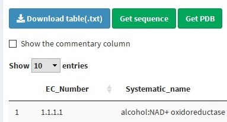
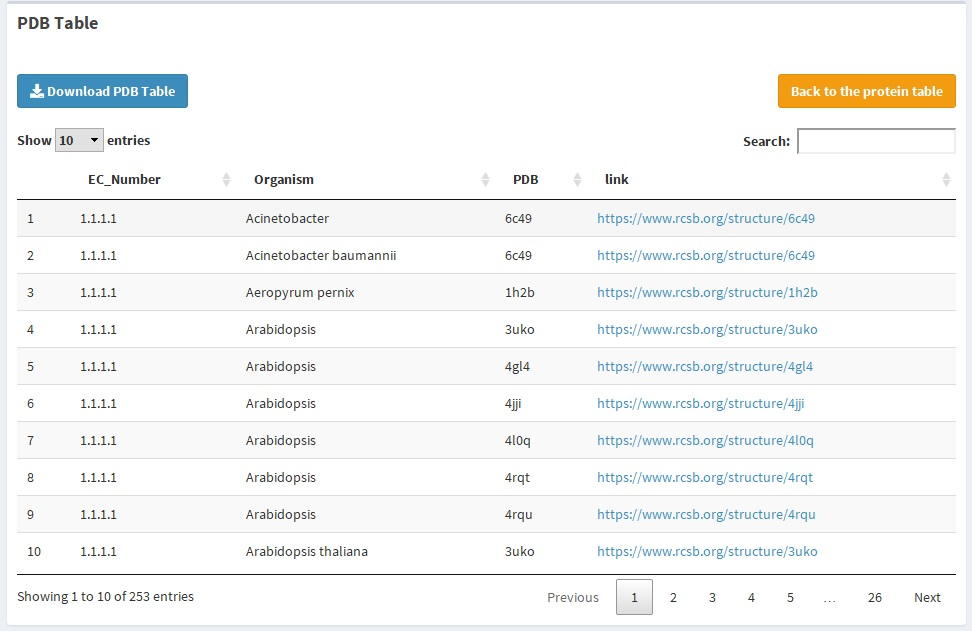
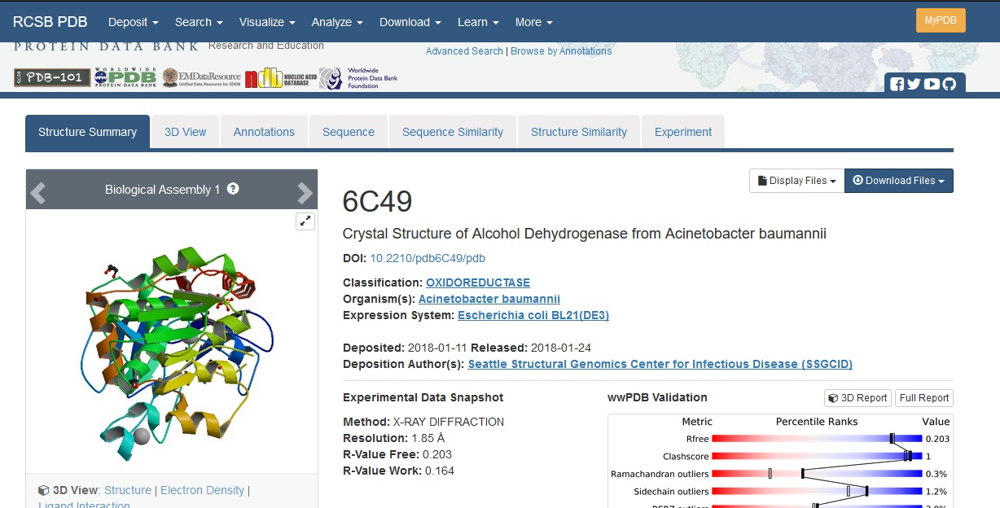
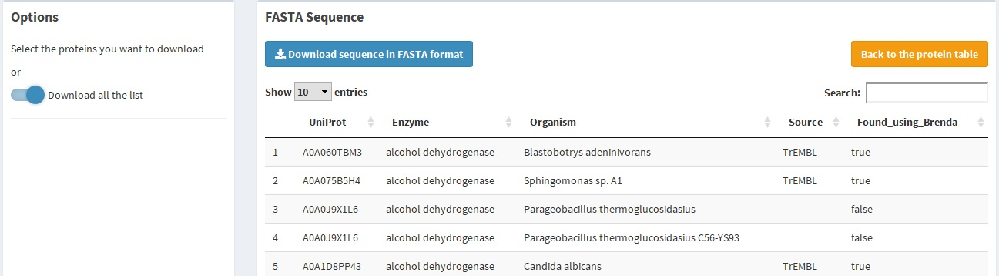
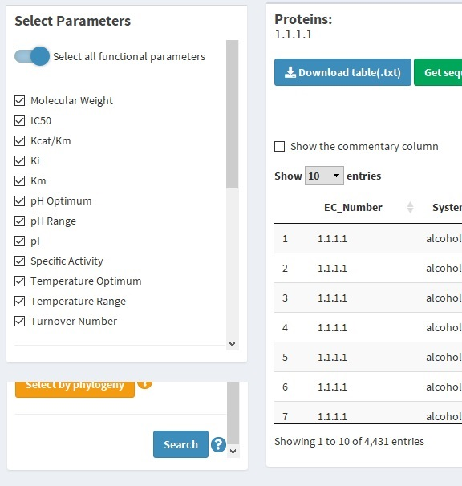

After the organism table ( Protein Table ) is generated, it can be used to search for numerical parameters, amino acids sequence or PDB codes with their respective link to the RCSB PDB (The Protein Data Bank of the Research Collaboratory for Structural Bioinformatics).
If you are interested in just one of these queries, you can skip the other in this tutorial. They are not depended to each other.
Generate a table with the PDB codes and their links to the RCSB PDB is done by clicking the "Get PDB" button above the Protein Table as shown below.
The generated table looks like this
The columns show the EC number, the organism, the PDB code, and the link. If you click any of this link, you are going to be redirected to the PDB site with an image like this
Also, you can download the whole table clicking the blue button, or return to the Protein table section clicking the orange one
The UniProt code that some proteins have are a distinctive code provides by the UniProt database, that a particular enzyme has. With this code, you can access the amino acids sequence of the protein. Brenda provides this code and the sequence with it. By clicking the "Get sequence" blue button, as shown below, a table reporting the sequence found by BRENDA are going to be shown.
This table looks like this
You can access the sequence code by download a .txt file clicking the blue button. The sequence to be downloaded can be selected in the report table clicking the respective row or download all the found sequence switching the "Download all the list" button in the sidebar.
The complete functional parameters query tutorial is in the next section. However, to generate a table with the 12 numerical parameters available in Brenda for every protein in the Protein table, you have to activate the "Select all functional parameters" switch on the top of sidebar, let the "Search for all parameters" switch activated above the table and click the "Search for parameters" green button at the end of the sidebar.
